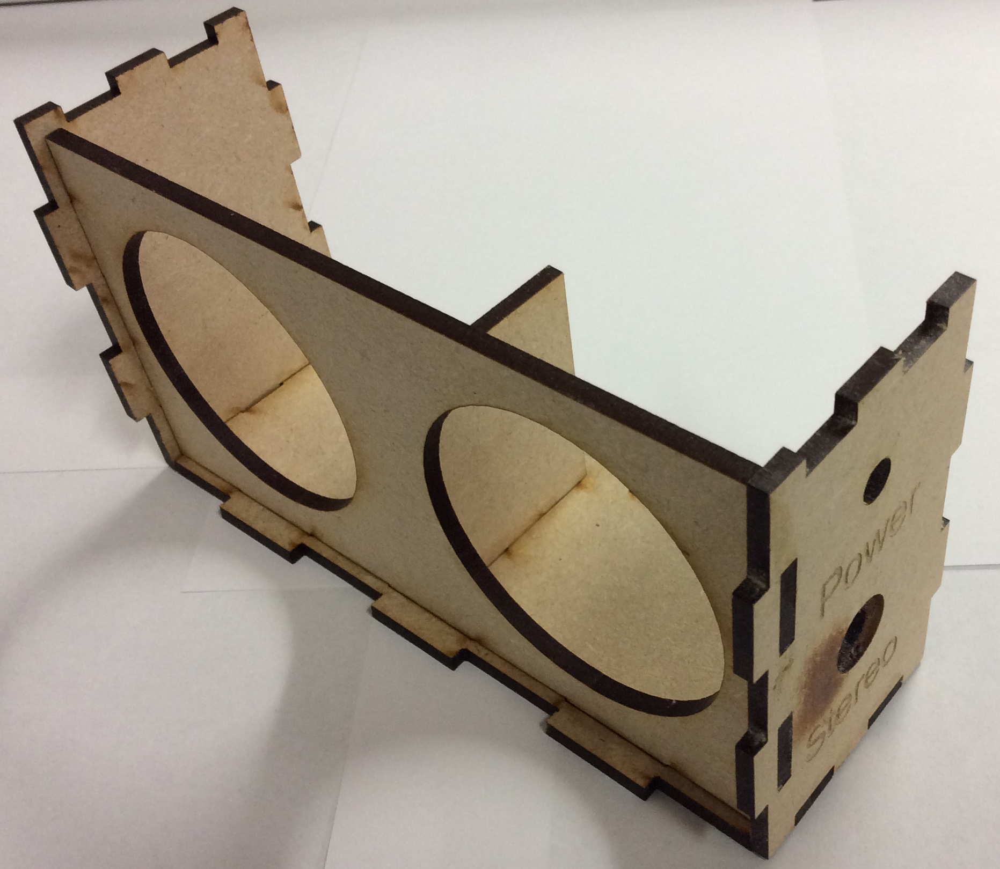
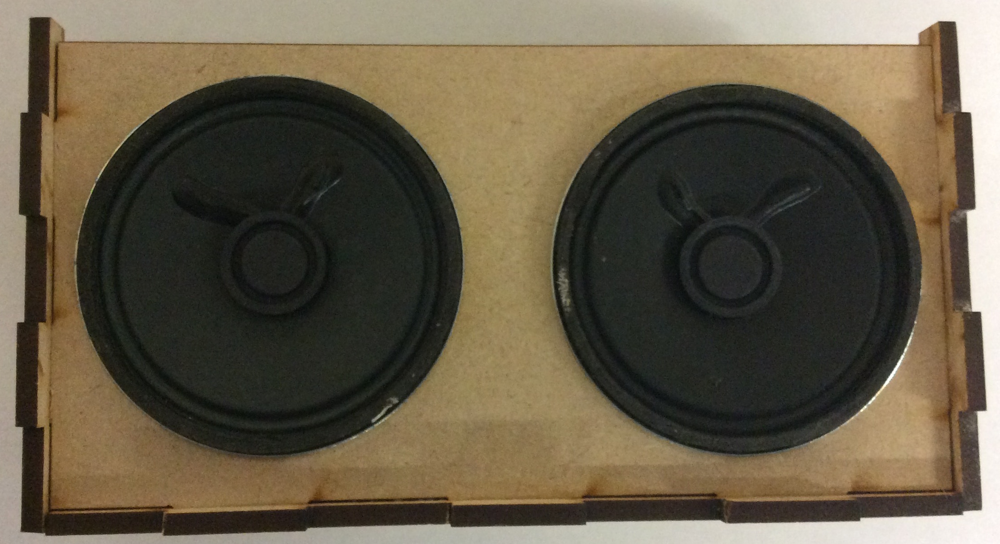
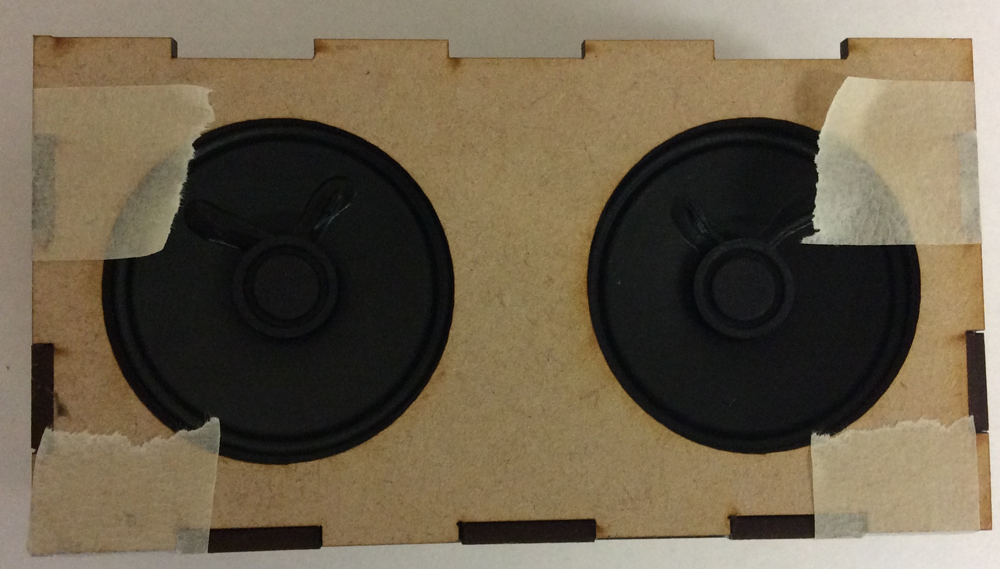
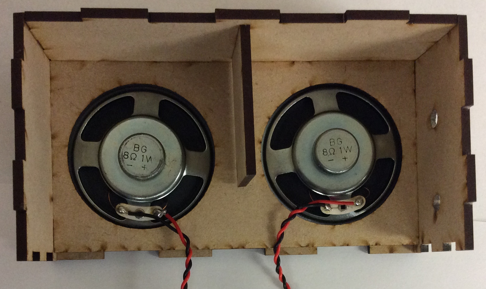
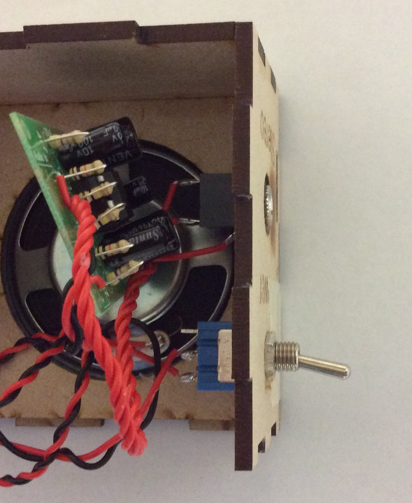
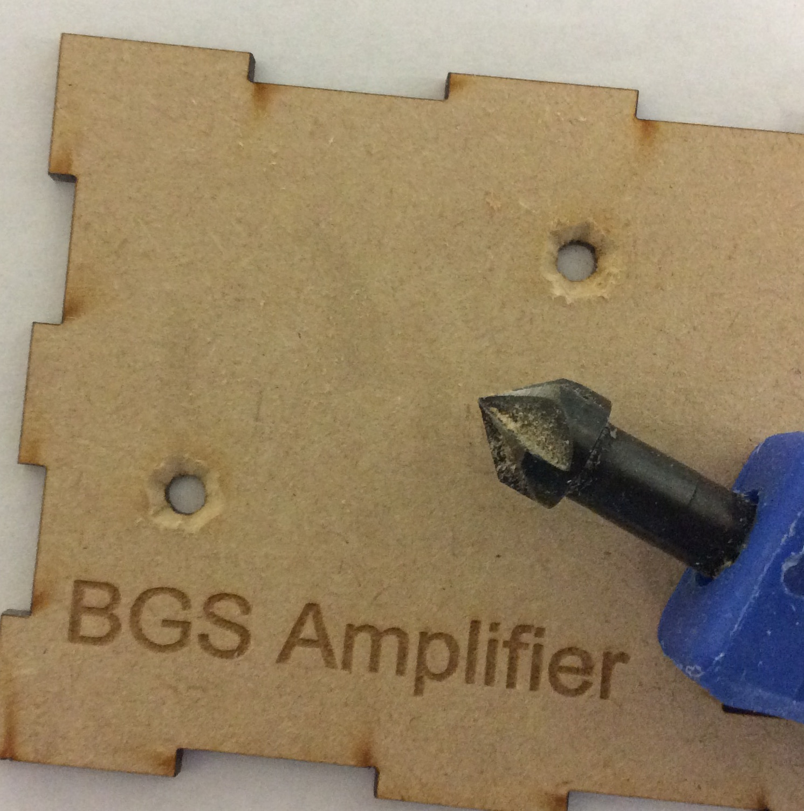
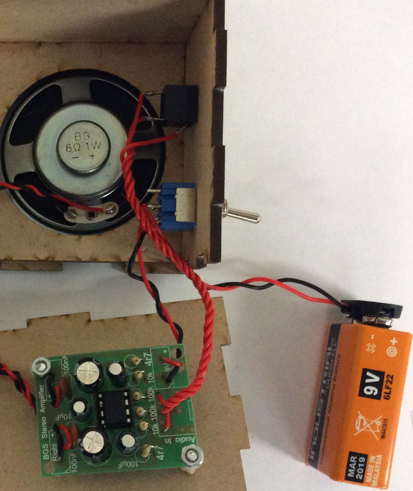
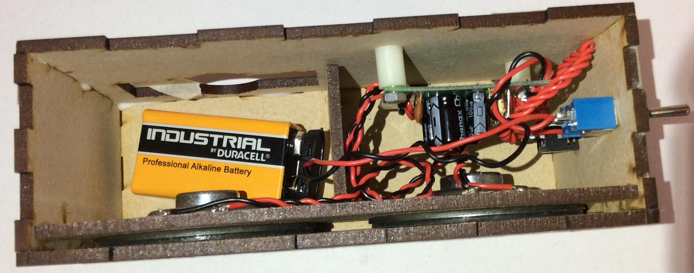
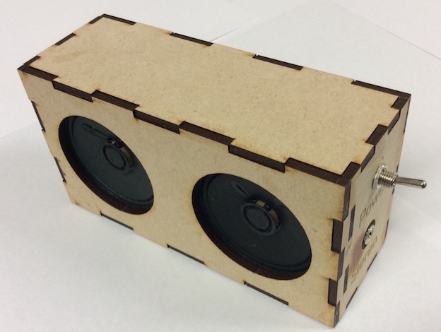

Installation
Table of Contents
1 Assembly
Basic housing
- In order to get the speakers to fit together correctly, you will need to follow the steps below.
- First, you will need to glue the basic frame together to prepare for mounting the speaker.
- You will need to use PVA glue and making tape to hold the sides in place while the glue is setting.

Speaker placement
- Once the glue is dry, you can now place the speakers on top of this, make sure the speaker terminals face up.

- You can now glue on the front panel and hold it in place using masking tap. You will need to use making tape as the front panel holds the speaker in place.

Speaker wiring
- Now you can solder the wire onto the speakers.

- Mount the switch and the stereo jack by pushing them through the hole and putting the nut on the other side. Make sure the switch is 'on' when it is pointing towards the 'Power' on the side of the box.

PCB placement
- You will now need to countersink the back panel.

- Screw the PCB to the back panel, Dont forget the 5mm spacers.

- Now test your project to make sure it works, before gluing it together.
Finalising
- Once you have tested to make sure your speaker works, you can glue the back panel on with the PCB attached.

- You can now neaten up the wiring and place the battery before gluing the lid on.
- test it one more time before gluing the lid on to make sure it works.
